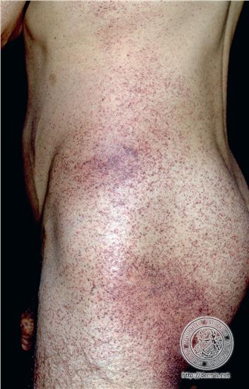

Angiokeratoma corporis diffusum universale.
* Định nghĩa:
+ Bệnh u mạch sừng hoá lan toả
+ Fabry's disease: Bệnh Fabry: bệnh thiếu men ảnh hưởng đến chuyển hóa mỡ, di truyền và liên kết giới tính.
Biểu hiện ở mắt gồm: Những vết đục dạng vân tay ở giác mạc, đục thủy tinh thể hình sao, các tĩnh mạch võng mạc và kết mạc ngoằn ngoèo.

Hình: Biểu hiện ở da trên một bệnh nhân u mạch sừng hóa lan tỏa (http://dermis.net)